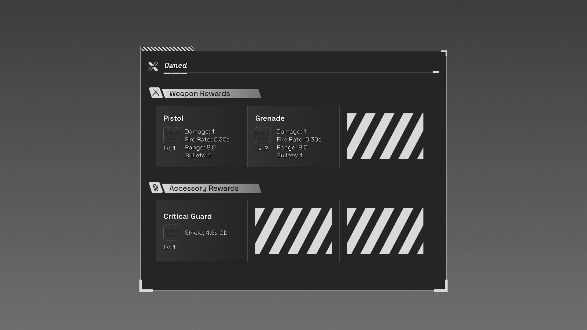
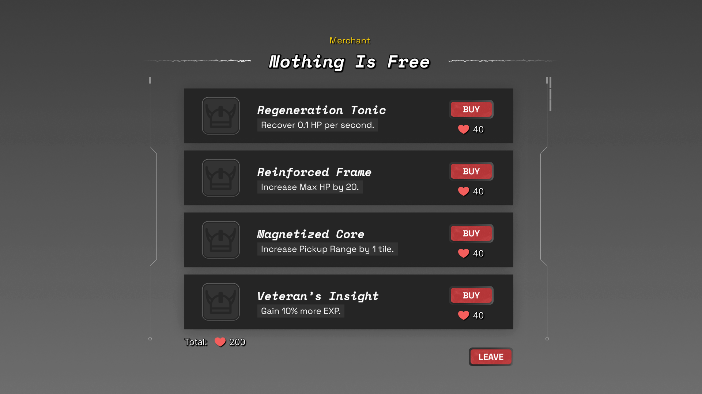
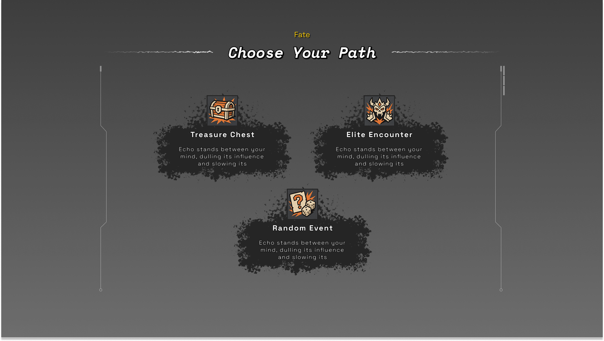
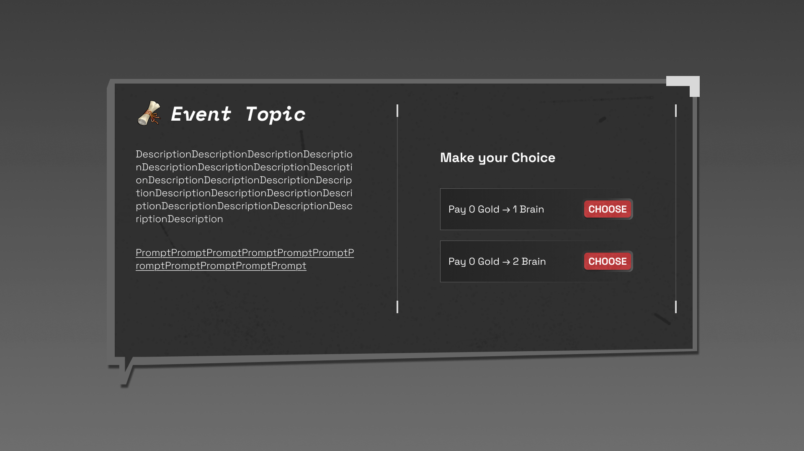
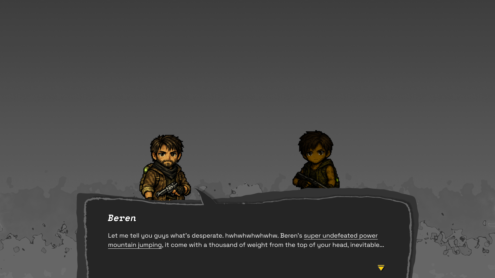
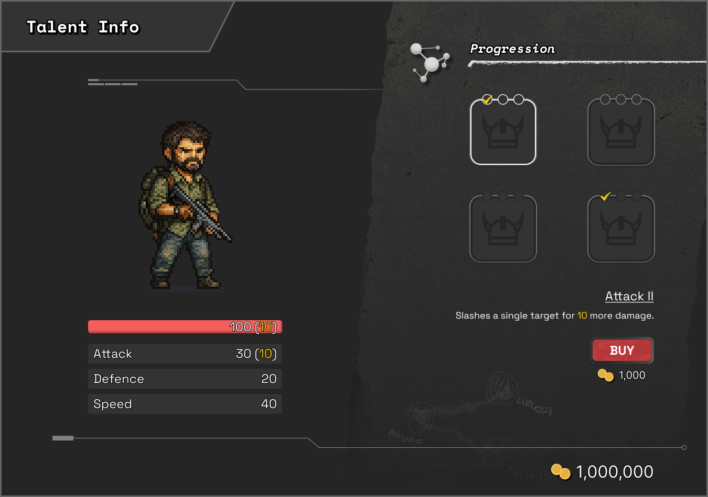
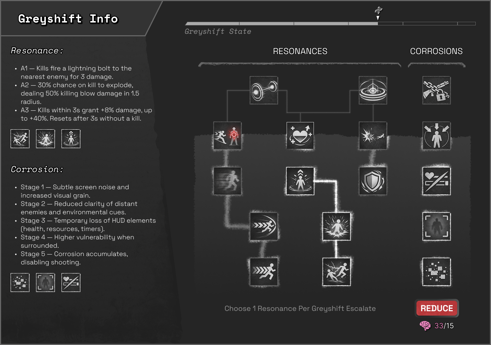
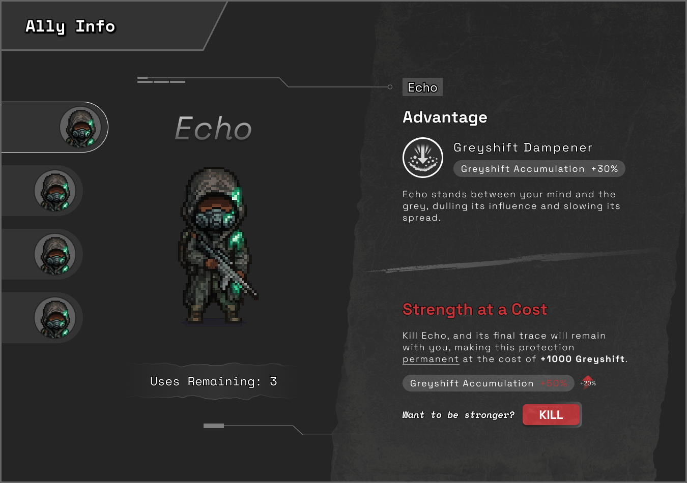
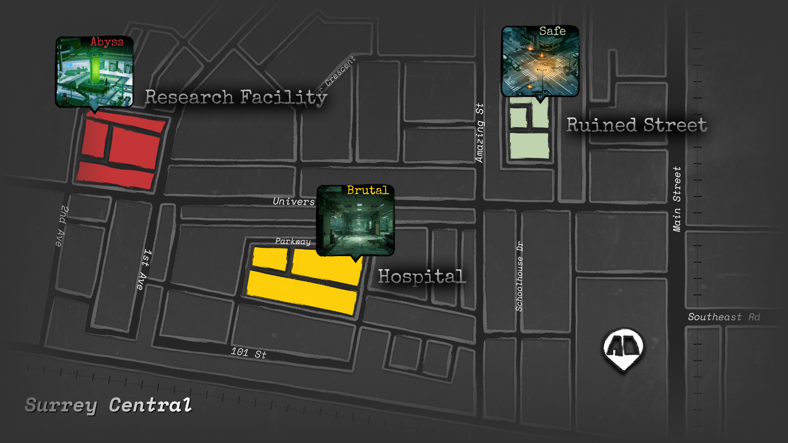
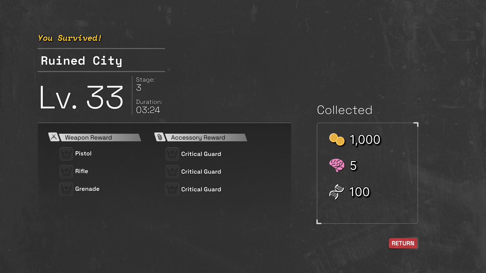

Goal 项目目标
Design and implement a fully playable roguelite prototype with a complete gameplay loop (in-run progression + meta-progression), where the player's power growth is inseparable from moral cost through Greyshift, scarcity, and ally decisions. 设计并实现一个可完整游玩的 Roguelite 原型，搭建完整玩法循环（局内成长 + 局外成长），并以“灰移”（独特成长机制）、资源稀缺与盟友抉择为核心，让力量成长与道德代价紧密绑定。
01 Description 01 项目简介
Beneath the Grey is a top-down roguelite survival action game set in a post-apocalyptic world shaped by global water contamination. A condition called Reconstruction Factor Syndrome (RFS), commonly known as “Greyshift,” slowly erodes human cognition, perception, and identity. The player controls a father trying to survive alongside his daughter, constantly choosing between immediate strength and the long-term cost of becoming less human. 《灰潮之下》是一款俯视角 Roguelite 生存动作游戏，背景设定在因全球水源污染而崩坏的末世世界。一种名为重构因子综合征（RFS）的病症，俗称“灰移”，会逐步侵蚀人类的认知、感知与身份认同。玩家扮演一位父亲，与女儿一同求生，在短期力量与逐渐失去人性的长期代价之间不断做出抉择。 The core loop spans pre-run → in-run → after-run: prepare and upgrade, fight through branching nodes (events, elites, merchant, chests), then return to invest resources into long-term progression, while Greyshift makes “getting stronger” feel unsettling rather than purely rewarding. 核心循环覆盖局外 → 局内 → 局后：准备与升级 → 通过分支节点推进（事件/精英/商人/宝箱）→ 回到局外投入资源进行长期养成；同时灰移让“变强”带着不安与代价，而不是单纯爽感。
02 UX/UI Designer 02 UX/UI 设计
As the UX/UI designer, I owned the entire player-facing UI across Beneath the Grey, designing every screen, panel, and UI element, and ensuring the experience flows logically from one decision moment to the next. The goal was to translate complex systems into interfaces that remain readable under pressure while reinforcing the game's bleak survival tone. 作为 UX/UI 设计师，我负责《灰潮之下》全部面向玩家的界面体验，设计了每一个页面、面板与 UI 组件，并确保玩家从一个决策时刻到下一个决策时刻的流程清晰、逻辑连贯。我的目标是将复杂系统转译为在高压环境下依然可读、易用的界面，同时强化游戏冷峻的生存基调。
My work 我的工作
INTERFACE — 界面 —
Designed the full UI suite end-to-end, shaping how all gameplay information are presented to players. 从零到一设计完整 UI 体系，定义并优化所有玩法信息在屏幕上的呈现方式。
INTERACTION — 交互 —
Built the UX logic behind the UI: how screens connect, how choices are compared, and how consequences are communicated before commitment. 构建体验逻辑：界面如何串联、选项如何对比、以及在确认前如何清晰呈现后果。
VISUAL LANGUAGE — 视觉语言 —
Defined typography, hierarchy, and colour usage to keep information scannable. 定义字体、信息层级与配色规则，让信息可快速扫读。
Details 具体内容
— INTERFACE — 界面
I was responsible for every interface players interact with, including menus, progression screens, decision panels, and moment-to-moment UI, ensuring consistent structure and clarity across the entire game. I treated UI as the system that makes the game playable and understandable. 负责玩家会接触到的全部界面，包括菜单、成长/进度页面、决策面板以及战斗与探索中的即时提示，确保全局结构一致、信息表达清晰。我认为 UI 是“让游戏可玩、可理解”的关键系统。
— INTERACTION — 交互
I designed the decision flow and interaction rules behind the UI: how players move from viewing options → understanding trade-offs → confirming actions, with consistent states and feedback to reduce uncertainty. This makes complex systems feel navigable and helps players commit to choices with confidence. 设计决策流程与交互规则：从感知/预期 → 查看选项 → 理解取舍 → 确认行动 → 获得反馈，提供一致的状态来降低不确定性。让复杂系统更易于理解和导航，帮助玩家更有把握地做出行动。
— VISUAL LANGUAGE — 视觉语言
I established a consistent hierarchy and visual language so players can scan costs, risk, and rewards quickly, keeping the UI grounded and readable without breaking the tone. 我建立统一的信息层级与视觉语言，使玩家能快速扫到成本、风险与收益，在不破坏整体氛围的前提下保持界面易读。
Work in Progress 进行中
This case study is updated throughout the term; additional finalized prototype will be published in the final build... 本案例将持续随学期更新；更多最终定稿的原型内容会在期末版本中发布...

These panels share one consistent UI system so players can read and decide quickly without relearning layouts. I prioritized key info (reward, cost, choice) and kept hierarchy, button placement, and feedback states predictable across contexts. This reduces friction during tense moments while preserving the game's bleak tone. 这些面板共享同一套一致的 UI 系统，让玩家无需重新学习布局就能快速阅读与决策。我优先呈现关键信息（收益/成本/选择），并在不同场景中保持层级、按钮位置与反馈状态的可预测性，从而降低紧张时刻的操作摩擦。







These three meta-progression panels are designed as three long-term paths fueled by the same resources earned in-run. I kept them to consistent hierarchy to reduce relearning. Also I structured the layout into modular blocks and used subtle linework accents to reinforce hierarchy and keep the UI clean and intentional. I surface the decision-critical info first: benefit, cost, and limits or downsides, while reinforcing the game's theme of scarcity and moral cost. 这三个局外养成面板是三条长期成长路线，消耗同一套局内获得的资源。设计保持一致的层级以减少重新学习成本。同时把布局组织成模块化区块，并用克制的线条强调层级，让界面更干净。决策关键信息优先置顶：收益、成本、以及限制/副作用，以强化游戏“稀缺与道德代价”的主题。

I designed the map as a fast decision screen that balances clarity with atmosphere. Locations are easy to compare at a glance through consistent risk labels and visual emphasis, while the right-side detail card explains what the player is walking into before committing. 地图在清晰度与氛围感之间取得平衡，通过一致的风险标签与视觉强调，让地点对比一眼可读；右侧详情卡会在确认前解释玩家即将面对的内容。

The ending screen to close the run with clear, satisfying feedback and a smooth handoff into meta progression. The layout highlights the run outcome first, then summarizes performance and rewards in a structured way so players can instantly understand what they gained and what to do next. This keeps the loop tight and reinforces progress without overwhelming players with details. 结算界面用于在一局结束时给出清晰、令人满意的反馈，并顺畅衔接到局外养成。布局先突出本局结果，再结构化汇总表现与奖励，让玩家立刻明白自己获得了什么、下一步该做什么。